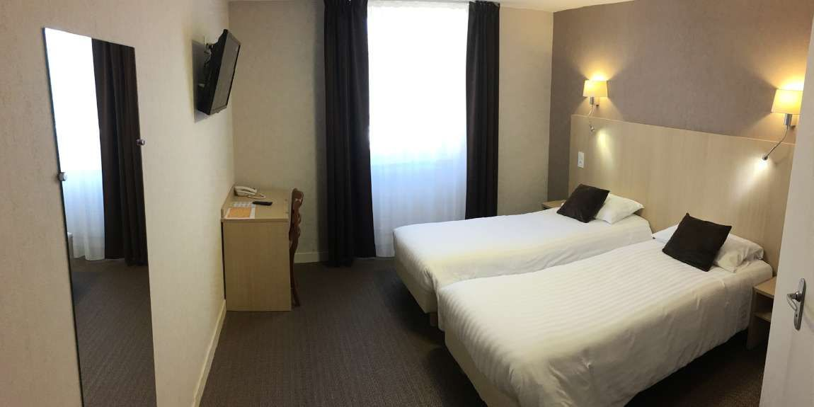

- — 8 €
Hôtel de l'Abbaye
15, place du 8-Mai
63490 Sauxillanges
04 73 96 81 80- E-mail
info@hotel-abbaye-sauxillanges.com
04 73 96 85 36
Hôtel de l'Abbaye
15, place du 8-Mai, 63490 Sauxillanges
Tél. 04 73 96 81 80 · info@hotel-abbaye-sauxillanges.com
SIRET 488 744 475 000 10 · APE 5510Z · TVA FR61 488 744 475
Applications Services, 5, rue du Sergent-Bobillot, 92400 Courbevoie · www.applications-services.com · info@applications-services.com